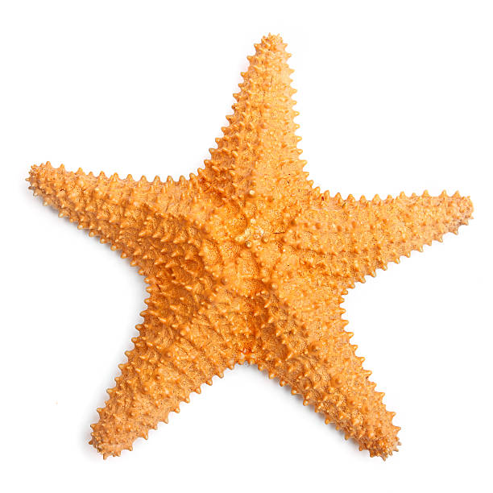
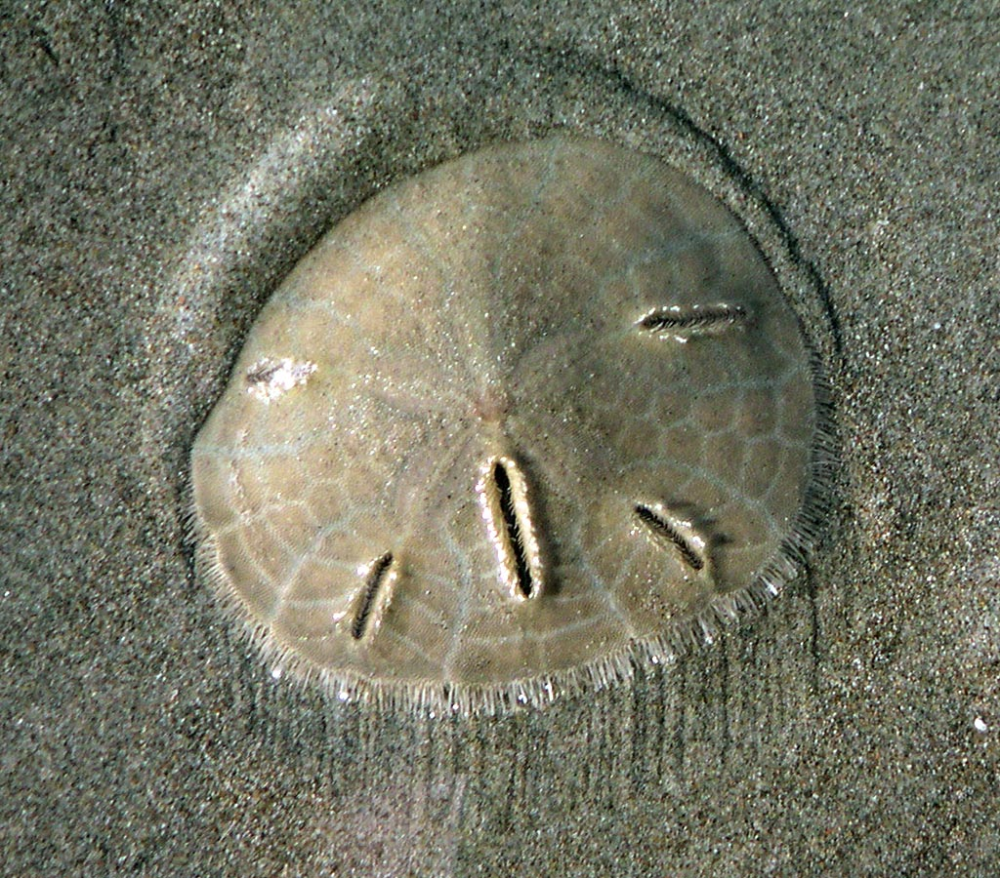
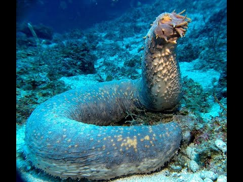

Um mundo de descobertas...
Os principais representantes dos Equinodermos, são as estrela-do-mar, bolacha-da-praia,ouriços-do-mar, lírios-do-mar,serpentes-do-mar e pepino do mar.

As estrelas do mar são seres equinoderme em forma de estrela, e pertecem a classe Asteroidea e ao subfilo Asterozoa. Existe cerca de 1.900 espécies de estrela-do-mar
Com algumas espécies podendo ser reproduzir tanto forma assexualda quanto sexualda.
A estrela-do-mar pode regenerar braços perdidos. Algumas espécies conseguem até regenerar um indivíduo a partir de uma parte do corpo, desde que ela contenha estruturas necessárias, como parte do disco central.
A parti disso surge outro ser vivo.
As estrelas do mar possui sexos separados, sendo uma fecudação externa, ou seja liberado o óvulo/espermatozoide na água, ao ser encrota gera varios ovos, com uma unica femea podendo gera 2.500.00 ovos
Porém algumas estrelas do mar podem ser hemafroditas, ou seja tem os dois sexos.

Os ouriços-do-mar são animais invertebrados marinhos, pertencentes ao filo Echinodermata e à classe Echinoidea. São encontrados em diferentes oceanos e vivem principalmente no fundo do mar, sobre rochas, recifes e regiões arenosas.
Possuem corpo arredondado, geralmente coberto por espinhos móveis que ajudam na proteção e na locomoção.
A maioria contem sexo separado, embora não seja visivel externamente. As gônadas são órgãos responsáveis pela reprodução dos ouriços-do-mar. Elas também armazenam nutrientes. Produzem células reprodutivas chamadas gametas. Durante a reprodução, os gametas são liberados na água. Nesse ambiente, ocorre a fecundação.
Embora sejam animais marinhos, os ouriços-do-mar também podem estar associados a problemas de saúde em seres humanos. Além disso, algumas doenças podem afetar os próprios ouriços. Na década de 1970, foi relatada uma doença conhecida como "doença das manchas", que provocou a mortalidade de ouriços-do-mar jovens. Na época, esses animais ainda eram pouco estudados. Os sintomas associados a problemas de saúde em humanos podem incluir:

As bolachas-da-praia são animais invertebrados marinhos, pertencentes ao filo Echinodermata e à classe Echinoidea. Possuem corpo achatado, arredondado e rígido, com pequenos espinhos que ajudam na locomoção. São parentes dos ouriços-do-mar, mas apresentam um formato diferente. Vivem principalmente em fundos arenosos de regiões costeiras, onde podem ficar parcialmente enterradas na areia. Alimentam-se de pequenas partículas de matéria orgânica presentes no sedimento marinho.
As bolachas-da-praia apresentam reprodução sexuada. Geralmente possuem sexos separados, ou seja, existem machos e fêmeas. Durante a reprodução, liberam espermatozoides e óvulos na água do mar. A fecundação acontece externamente, formando ovos que dão origem a larvas. Essas larvas ficam na água enquanto se desenvolvem e, posteriormente, passam por uma metamorfose até se tornarem bolachas-da-praia jovens.
O folcore popúlar considera que encrota um dos seres na praia e sinal de moeda perdidas das sereias ou povos Altaticos.

Os pepinos-do-mar são animais invertebrados marinhos que pertencem ao filo Echinodermata e à classe Holothuroidea. Possuem corpo alongado e macio, geralmente com formato semelhante ao de um pepino. Vivem no fundo dos oceanos, onde podem ser encontrados em regiões arenosas e rochosas. Alimentam-se principalmente de partículas orgânicas presentes na areia e no sedimento marinho, ajudando na reciclagem de nutrientes no ambiente.
Os pepinos-do-mar apresentam principalmente reprodução sexuada. A maioria possui sexos separados, com machos e fêmeas. Durante a reprodução, liberam óvulos e espermatozoides na água do mar, onde acontece a fecundação externa. Após a fecundação, formam-se ovos que dão origem a larvas. Elas passam por diferentes fases de desenvolvimento até se transformarem em pepinos-do-mar jovens. Algumas espécies também conseguem se reproduzir assexuadamente, dividindo o corpo em partes que podem regenerar os tecidos necessários.
Os pepinos-do-mar possuem algumas características surpreendentes. Apesar de seu corpo macio, são capazes de se defender expulsando parte de seus órgãos internos, que podem ser regenerados posteriormente. Algumas espécies conseguem mudar de formato e até se alongar para entrar em espaços pequenos. Outra curiosidade é que ajudam a manter o fundo do mar limpo, consumindo matéria orgânica presente no sedimento. Além disso, possuem pés ambulacrais e tentáculos ao redor da boca, utilizados para capturar alimento.
Agradecemos à Wikipédia pelas informações utilizadas como apoio na elaboração deste trabalho.
Visitar WikipédiaCriado pelo Isaac Prates Gomes.